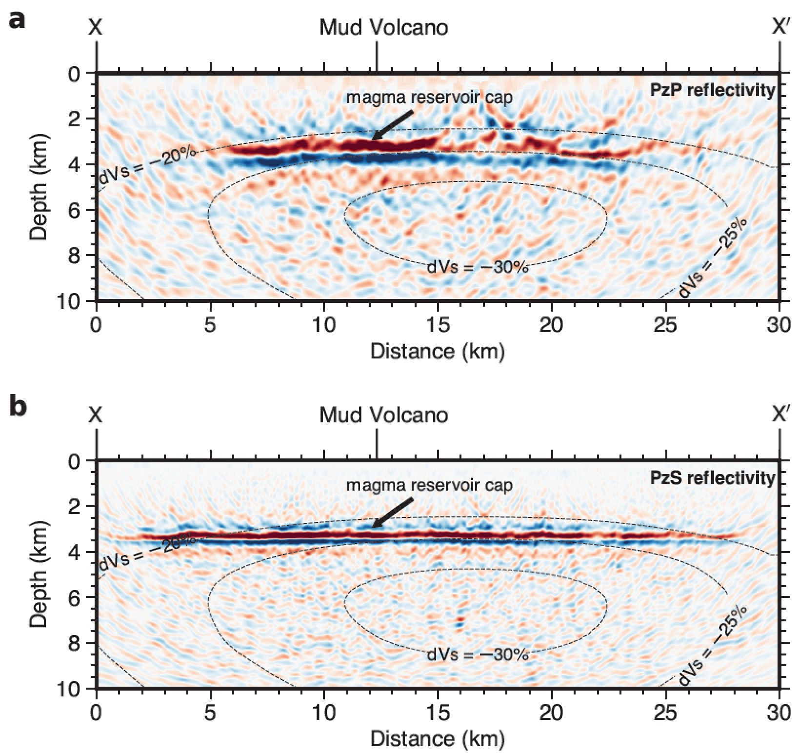
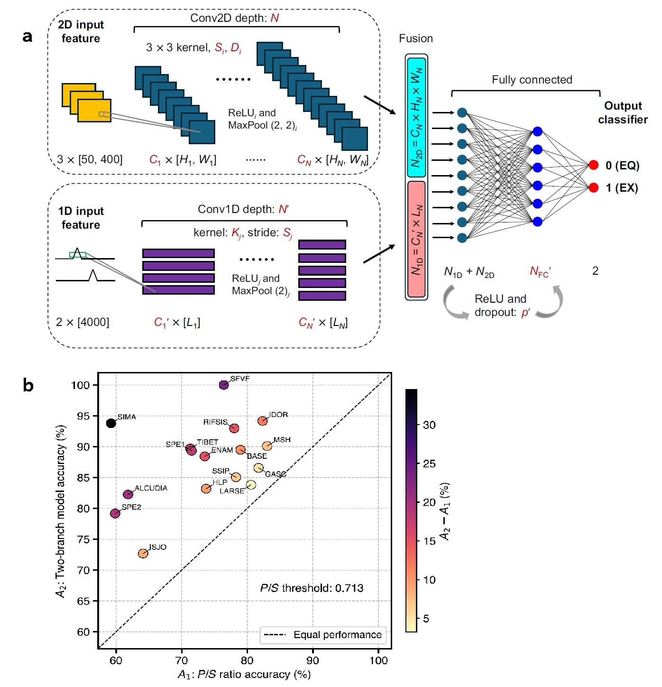
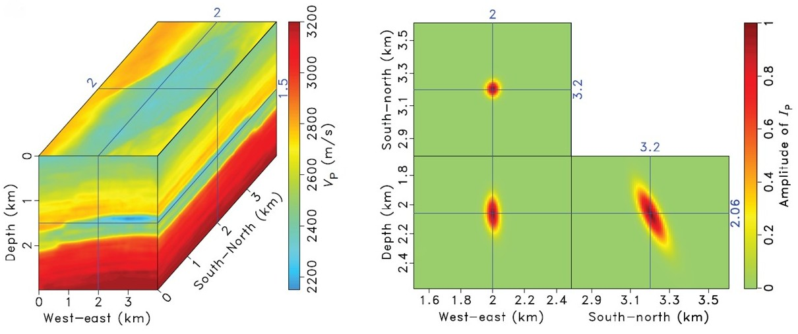
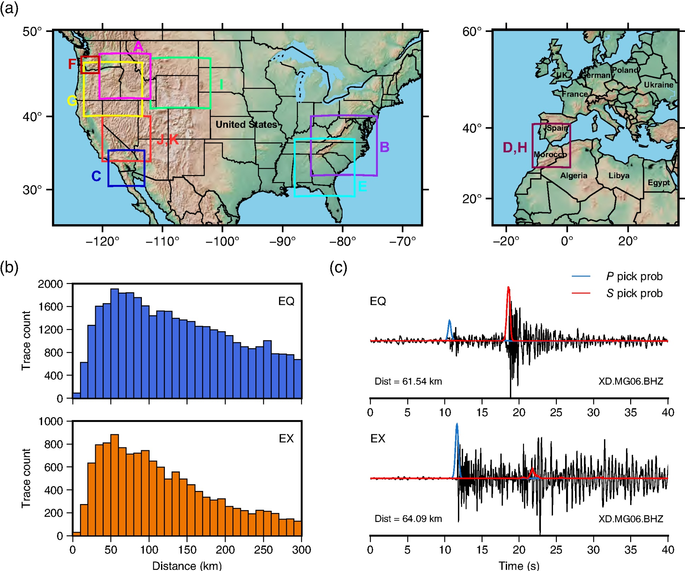

Volcanic hazards can have severe consequences including loss of life and economic loss and thus require accurate knowledge of subsurface structures to improve risk mitigation. The diverse types of volcanoes in the US offer unique opportunities to study the magmatic systems, from continental volcanoes (e.g., Yellowstone) to oceanic volcanoes (e.g., Axial Seamount). From an instrumentation perspective, traditional permanent or transportable arrays have limitations on spatial resolution. From a computational perspective, advances in high-performance computing now enable full elastic wave simulations to image details of Earth's interior. For example, controlled-source experiments in Yellowstone for the first time allowed us to image magma reservoir's top and estimate porosity and magmatic volatile-melt fraction within this cap layer. Ongoing work in Mount St. Helens provides another example using full waveform tomography, where thousands of nodal stations are being used to constrain seismic P and S wave velocities using active explosion sources and passive ambient noise cross-correlations.
My long-term research goal is to advance our understanding of the structure and dynamics of magmatic systems across the crust. In particular, I seek to resolve fluid pathways in the upper crust, recharge channels, in-reservoir sill structures, and lower crust magma storage chamber. Seismic data will be obtained from newly deployed or recently developed seismic arrays through collaborative field efforts in the department.

Discriminating among seismic source types is important for hazards monitoring (volcanic eruptions, landslides) and national security (underground nuclear explosions). Artificial intelligence (AI) provides an efficient framework for rapidly analyzing increasingly large seismic datasets and has demonstrated strong performance even for small-magnitude events and low-signal-to-noise-ratio observations.
Automatic classification of explosions versus earthquakes is important for nuclear monitoring that interests Air Force Research Lab. I found that the differential P and S pick probabilities output from pre-trained phase detection models can achieve classification accuracy comparable to the traditional P/S amplitude ratios (Duan et al. 2025, TSR). Based on this observation, I designed a two-branch CNN model that jointly learns from P- and S-wave probability vectors and seismic scalograms (Fig. a). This model substantially outperforms P/S ratio discrimination accuracy by an average of 14% (Fig. b). Most appealingly, it requires neither an accurate velocity model nor manual time windowing, enabling automated processing without analyst intervention and well-suited for deployment across diverse geologic regions (Duan et al. 2026, SRL).
For energy applications, I used AI to identify low-frequency long-duration induced seismicity in continuous borehole seismic data from the Permian Basin, Texas. I found that these events can serve as proxies for tracking fluid migration through fractures (i.e., fracture flow) (Duan et al. 2024, IEEE TGRS). This framework may also be extended to the analysis of long-period volcanic seismicity, where fluid movement is thought to play an important role.

I aim to develop realistic crustal reservoir models for testing seismic imaging workflows, moving beyond oversimplified low-velocity anomalies. Inspired by the industry-built Valhall North Sea model, where gas clouds resemble melt lenses in conceptual magma transport models, I plan to extend this model to caldera scale. Based on one of the most thoroughly studied volcanoes (e.g., Yellowstone), I plan to translate multi-disciplinary interpretations (geophysics, geodesy, geochemistry) into seismic velocity and density models across the crust. The new models will enable synthetic studies on magma imaging and volcanic seismicity, providing opportunities for multiple publications, as I have demonstrated in exploration seismology, while also informing the design of future field work.
As we start to deploy denser local seismic stations to remote areas in recent decades, detailed wave types can be coherently recorded which were impossible to identify in the past sparse data (e.g., higher-mode surface waves, second-order scattering waves). I view these previously overlooked signals as carrying valuable information about specific Earth materials, making them worth pursuing in practice. This perspective builds on my previous work, where I leveraged the interaction between adjoint P and S waves to achieve high-resolution imaging of micro-earthquake sources in oil and gas reservoirs as well as the top of the magma reservoir beneath Yellowstone caldera.

Monitoring near-surface hazards in the shallow subsurface is essential for environmental sustainability and infrastructure safety. My early research experiences laid the foundation for my subsequent work in engineering and applied geophysics. During my master’s studies, I investigated karst cavity detection in limestone terrains using crosshole seismic tomography. This work provided me with hands-on experience throughout the research process, from field data acquisition and seismic data processing to velocity inversion and geological interpretation. By relating P-wave velocity variations to subsurface cavities, fractures, and their fillings, I explored the use of seismic methods to identify geological conditions that could threaten foundation stability and infrastructure development. This research resulted in a publication in Engineering Geology (Duan et al., 2017), which remains my most-cited paper to date. More importantly, the entire research experience strongly influenced my perspective on applied near-surface seismology.

My long-term research goal is to advance subsurface imaging by combining conventional geophysical methods with AI/ML, emerging sensing technologies, and new computational approaches. I hope to use these complementary methods to better characterize complex subsurface structures and processes, and to reduce uncertainties in geophysical interpretation. Beyond my current research, I am interested in expanding into several areas that I have not yet had the opportunity to pursue:
a) Geothermal Energy Exploration and Development: Applying geophysical imaging and monitoring techniques to characterize geothermal reservoirs, identify fluid pathways, and understand the subsurface processes that control geothermal energy extraction.
b) Critical Mineral Exploration and Ore-Forming Processes: Using geophysical imaging together with geological and geochemical information to improve the identification and characterization of critical mineral deposits, as well as to investigate the geological processes that lead to their formation.
c) Subsurface Monitoring Using Distributed Acoustic Sensing (DAS): Making use of fiber-optic DAS technology to detect subtle changes in the subsurface at high spatial and temporal resolutions. I am particularly interested in its applications to monitoring fluid migration, fracture development, and other dynamic subsurface processes.
d) Quantum Technologies in Geophysics: Investigating whether emerging quantum technologies, particularly quantum sensing and quantum computing, could open up new possibilities for geophysical imaging. For example, I am interested in whether quantum-enabled measurements could provide additional constraints for seismic imaging, and whether combining these measurements with conventional seismic data through multi-physics joint inversion could help address the non-uniqueness of subsurface imaging. Another question worth exploring is whether quantum computing could offer new ways to tackle challenging geophysical inverse problems, and whether these approaches could bring practical improvements to subsurface characterization.